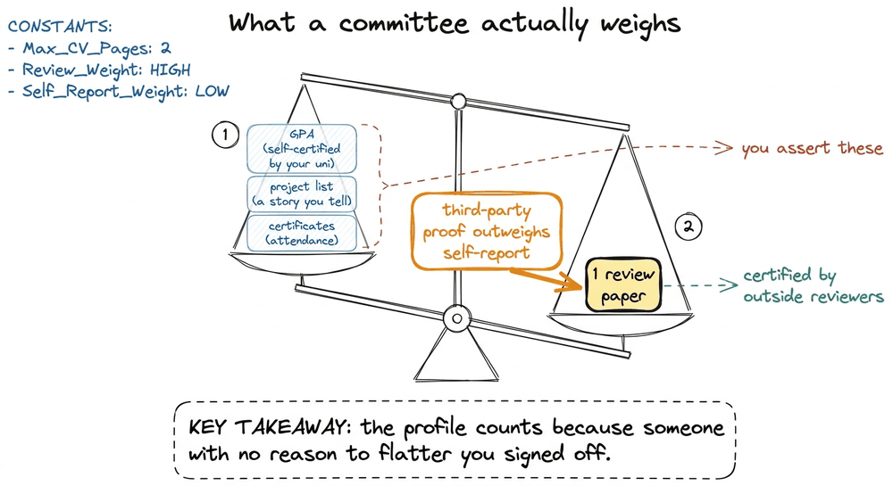
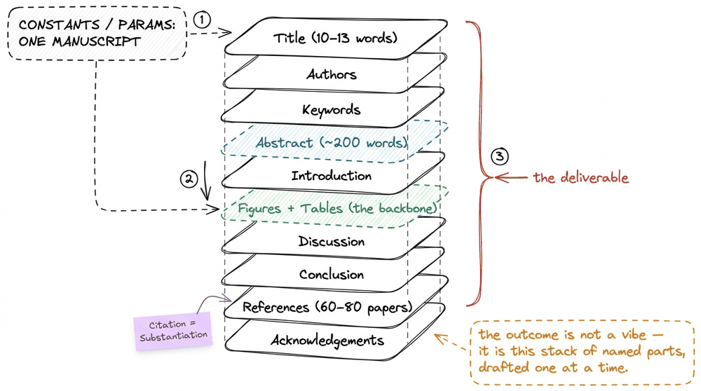
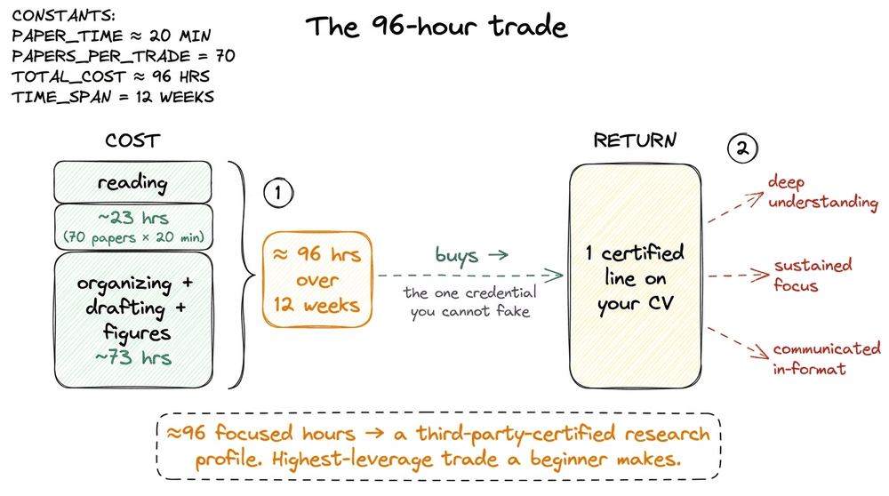
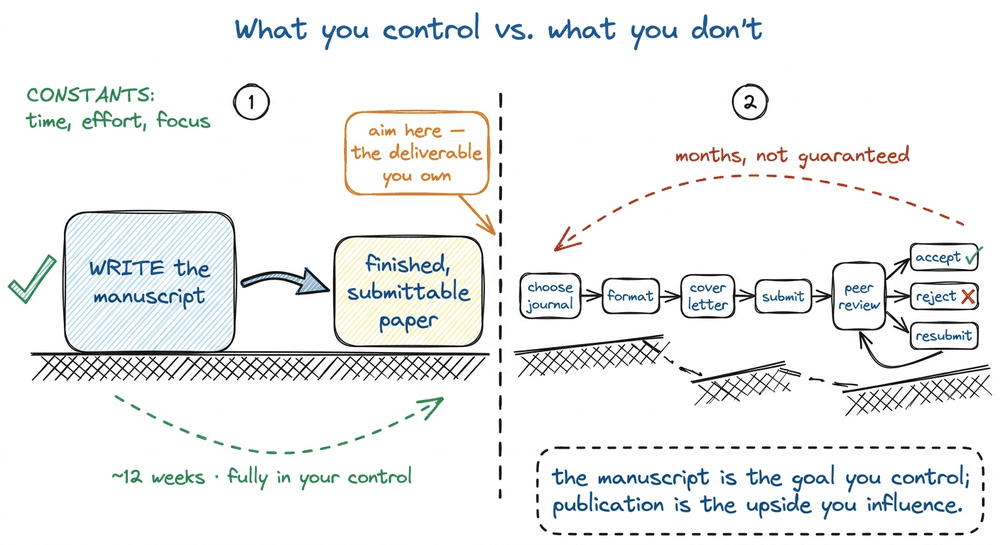
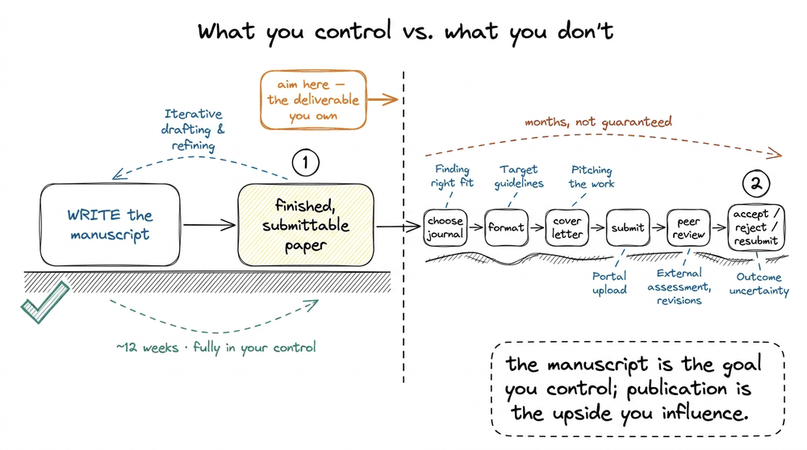

Why Your Research Profile Matters
Let me start with the sentence that made me take all of this seriously: a research profile is the one line on your application that someone else certified. Your GPA is a number your university gave you. Your project list is a story you tell about yourself. But a published paper — even a modest one — is a claim that a set of strangers, who had every incentive to say no, read your work and let it through. That asymmetry is the whole reason admission committees and hiring panels weight it so heavily, and it is why a beginner with one review paper often outranks a beginner with a wall of certificates.
I want to make that intuition concrete, because "research looks good on your CV" is the kind of advice that is true, useless, and slightly demoralizing all at once. The useful version is a mechanism: why it counts, how much it can move you, and what the tangible outcome actually is at the end. Let me build that up honestly, including the part most people skip — that writing a paper does not guarantee it gets published. 1 1 This is the single most important scope note in the whole book, so I will repeat it more than once. Writing a finished manuscript and having it appear in a journal are two different events, often separated by months of peer review. You control the first completely; you influence the second.
What a committee is actually reading for
Picture the person on the other side of your application. A research-internship lead, or a master's admissions reviewer, has a stack of a few hundred folders and maybe two minutes per folder. They are not looking for talent in the abstract — talent is unmeasurable and everyone claims it. They are looking for evidence of a specific, hard-to-fake behavior : that you can go deep into a narrow area, live in it for weeks, form your own view, and communicate it in the format their field respects.
A research profile is exactly the artifact that proves that behavior happened. And here is the piece I underweighted for years: you do not need a lab, a grant, or a team to build one. The most accessible entry is a review paper — a thorough, systematic reading of a research area where you comprehensively understand the field, form your own opinion, and synthesize it. 2 2 A review paper is not original experimental research. A research paper reports findings from your own experiments, simulations, or modeling; a review paper reports your synthesis of what a whole field already found. We draw this line carefully in what is a research paper . It needs only two resources you already have: time and access to the literature . No pipetting, no cluster, no co-authors required.

Committees discount what you assert about yourself and reward what an outside reviewer certified. One review paper can outweigh a stack of self-reported items.
Why this trips people up
Here is the trap I watched swallow years of my own hesitation, and it has two halves. The first is waiting for permission : the belief that you may only write a paper once a professor invites you into a lab, hands you data, and blesses the project. For a review paper that is simply false. The two resources it needs, time and access to the literature, are already sitting on your laptop. Nobody has to pick you. The second half is the mirror-image mistake: reading the word "review" as "summary" and assuming it is a soft, low-effort book report. It is not. A review paper still has to form and defend your own synthesis of a field, which is exactly the deep, sustained behavior the committee is paying attention to. Underestimate it and you produce a shallow list of paper abstracts that no reviewer will certify. So the useful stance is the narrow one between those two errors: you do not need permission to start, and you do not get to phone it in. 3 3 A quick self-test. If your draft could be written by skimming ten abstracts in an afternoon, it is a summary, not a review. If it argues a thread through the field that you could not have stated before reading 70 papers, it is a review. The difference is the whole value.

The two failure modes that keep a review paper from ever getting written. The road between them is starting without waiting for permission while still doing the genuine synthesis.
The tangible outcome, drawn as an object
So what is the thing you end up holding? Vague answers here are what keep people from starting, so let me be exact. The tangible research outcome is a manuscript — a document with a fixed, recognizable anatomy — plus, once accepted, a permanent public record with a citable address.
The manuscript has parts, and they come in a canonical order you will meet again and again: Title , Authors , Keywords , Abstract , Introduction , Figures , Tables , Results (for research papers; a review paper's body is its synthesis, so it usually has no separate Results section), Discussion , Conclusion , References , and Acknowledgements . 4 4 Keep this order in your head — the entire book is organized around drafting these parts in sequence. A review paper simply folds "Results" into its main body; everything else stays. That list is not decoration; it is the shape of the object you are building, and every later chapter fills in one part of it.

The concrete deliverable is a single manuscript with a fixed anatomy. Every chapter of this book drafts one of these named parts.
Notice the numbers already pinned to that figure. A good review paper cites 60–80 papers, often 150+ — and the guiding principle behind every one of those citations is "Citation = Substantiation" : you cite not to pad a bibliography but because each factual claim you make needs a source standing behind it. 5 5 This does not mean reading 80 papers cover to cover. Most are read in "bird's-eye" mode — abstract, figures, tables, conclusion — and only a handful in depth. That reading discipline is its own chapter later; for now, "cite = substantiate" is the mental hook. The abstract you will write first is around 200 words . The title lands at about 10–13 words . These are not arbitrary; they are the field's conventions, and hitting them is part of what signals "this person knows the format."
Napkin arithmetic: is the return worth the time?
Let me do the calculation that actually convinced me, because "it's worth it" deserves a number. The course this book is built from lays out a realistic 12-week timeline — roughly three months, day zero to a submitted manuscript — for a first review paper. That figure is the honest time to reach submission , not guaranteed publication; peer review adds more on top, and I will never pretend otherwise.
Suppose you spend those 12 weeks at a gentle pace. Say 8 hours a week — a couple of focused evenings. That is:
8 hours/week × 12 weeks = 96 hours totalNow weigh that against the reading load. The literature review across the project runs in deliberate passes rather than one heroic marathon — the first 25 papers to map the field, then the next 25 to deepen it, then a final 20 to close the gaps your outline exposes — about 70 papers in all, logged one row per paper in a simple sheet. If most of those are bird's-eye reads at roughly 20 minutes each, the reading alone is:
70 papers × 20 min ≈ 1,400 min ≈ 23 hoursSo reading is under a quarter of the budget; the other ~73 hours go to organizing, drafting, and figures. Against that ~96-hour investment sits a single line on your CV that a committee treats as third-party-certified evidence of deep, sustained, communicated understanding — the exact quality they cannot measure any other way. Ninety-six hours to manufacture the one credential you can't fake is, by any honest accounting, one of the highest-leverage trades a student can make.

The honest cost of a first review paper is roughly 96 hours across 12 weeks; the return is a single certified credential no self-report can imitate.
The honest catch, stated plainly
Now the part the motivational version leaves out, and the reason I trust this book's framing. Writing the paper does not guarantee publication. When you finish the manuscript, you are not done — you are at the start of a separate, months-long process: choosing a journal, formatting to its guidelines, writing a cover letter, submitting, waiting through peer review, and very possibly getting rejected and resubmitting elsewhere. 6 6 Rejection is not failure; it is the normal texture of publishing. The professional move on a rejection is to revise and resubmit to a different journal, not to stop. There is a whole chapter on surviving this later in the book.
That catch is not a reason to hesitate — it is a reason to reframe what the goal is. Your controllable goal is the finished, submittable manuscript . That object already does most of the work on your profile: it is concrete evidence you can point to, it teaches you the entire publishing pipeline end to end, and it is the prerequisite for every publication you will ever have. Publication is the upside; the manuscript is the deliverable. Aim at the thing you control.

The manuscript is entirely in your control and is the real deliverable; publication is a longer, uncertain process that follows. Aim at the object you own.
So the key is this
If I compress the whole chapter to one line: a research profile is valuable precisely because it is expensive to fake and cheap to start — around 96 focused hours over 12 weeks, no lab required, producing a certified artifact that self-reported credentials cannot match. The committee is not rewarding the paper; it is rewarding the sustained, deep, communicated understanding the paper proves happened . And the honest ceiling — that publication is not guaranteed — is exactly why you aim at the finished manuscript, the outcome you fully control.
That reframes the beginner's question from "am I smart enough to get published?" to "can I build one well-structured manuscript in 12 weeks?" — and that one is answerable with a plan. Before we make the plan, we need to be precise about the object itself. In the next chapter we open it up: what is a research paper — its anatomy, its purpose, and how it differs from a report, a blog post, or a thesis.